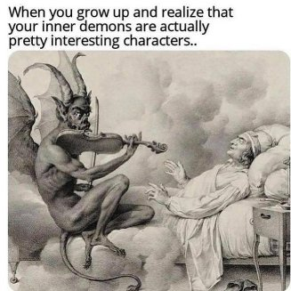

--Jed Mckenna
"People are suffering under the torture of the fantasy self they’re failing to become."
--Will Storr
"The belief that something is wrong is the fire under the ass of humanity."
--Jed McKenna
When I was little I wanted to stay inside and read rather than go outside and play with other kids. My mother would throw me out of the house for some “fresh air,” and I’d sit on the steps and read there until she let me back in, while a few feet away the neighborhood kids played together.
My not wanting to be social was a clear personality flaw. One among many I proceeded to spend years trying to fix.
So I learned how to socialize; I learned to be more comfortable in crowds.
I learned be an excellent fake.
Though 60 years later I still don’t want to go out and play.
And the Judy character has still not measured up to what it is supposed to be.
The thing is, has anyone?
Let’s face it, everyone is messed up in some ways. None of us are right, according to the rules of personhood.
We’re either too angry or too isolated or too unloved. We think we’re not a good parent, not kind enough, not grateful enough. Maybe we’re not attractive or motivated or productive enough.
The problem seems to be particular to us. I mean, look our have-it-together friends, or those people we read about, or those enlightened masters who've transcended the self.
These folks show what we could and should be.
Never mind that our friends may not have our particular imperfections but they have others. Never mind that, despite great wisdoms and understandings, every single guru has held on tight to personality flaws. Alan Watts drank and did drugs, Nisargadatta chain-smoked, Krishnamurti was known for love affairs and extravagant living, Mooji quite enjoys his meals and sex and adoration.
Turns out the people we compare ourselves to, also don't have what we think they have.
Regardless, we are completely certain that being a messed-up human is not ok, and that these things must forever be polished, fixed, bettered and altered.
Because it doesn't seem possible that we can't someday have success changing the personality, if only we do things right. After all, some addictions get quit, some mouths stay zipped, some exercise keeps depression away.
For a while.
Yet even in those best case scenarios, an inherent sense of Something’s not right remains.
Because do any of those changes actually alter whatever it is we really are?
Does suddenly starting to file taxes on time actually change the personality?
It could be simply that all individuals are quirky and unique. Just by definition and nature of “individual.”
It could be that this is what comes with "separate", that not-rightness is what comes with the presentation of a separate, unique self.
Making imperfection a requirement. Built in. Not going anywhere.
That possibility sure makes our lifelong attempts to clean up and transform these selves into something more alike and acceptable start to look like a losing proposition.
Meanwhile, if we were watching a movie, would we demand that all the characters be calm, loving, successful, productive, grateful? Would we demand that no character be nasty, smoke, fail?
Do we need all actors on a screen to be the same?
Could it be possible that even when we hate the characters, we also love them for what they bring to the show?
Perhaps the perceived imperfections we try so hard to change in ourselves are not going anywhere because
they’re part of the fun.
Maybe the messier the character, the better.
Maybe this show is adored.
Now I realize this may be upsetting, maybe even infuriating.
To consider, “This is IT” in this regard goes against absolutely everything we’ve ever known.
Even though clearly, this is it.
That includes these all-wrong personalities. That includes dissatisfaction and self hate and wishing we were different.
We’re never going clean up the human mess we take ourselves to be.
We think it’s supposed to be otherwise. But that thought is delusional.
Because it has never been otherwise.
This is the game.
Perfect in our imperfection, we’re playing it perfectly.
So maybe we can play with accepting this messy wrong thing instead of spending a lifetimes trying to make it identical to all the other individuals.
Maybe we can finally just
Leave it the hell alone.
Because it’s just possible that existence
knows how it likes its movies.
“Right there in the imperfection is perfect reality.”
― Shunryu Suzuki
“Drop the idea of becoming someone, because you already are a masterpiece. God has himself created you, you cannot be improved."
-- Osho
to subscribe and get your Mind-Tickled every week.
